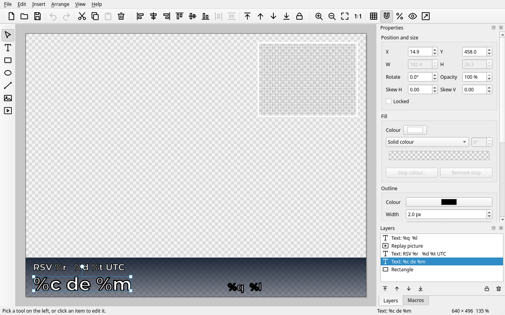
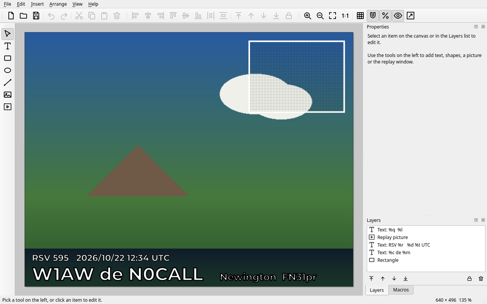
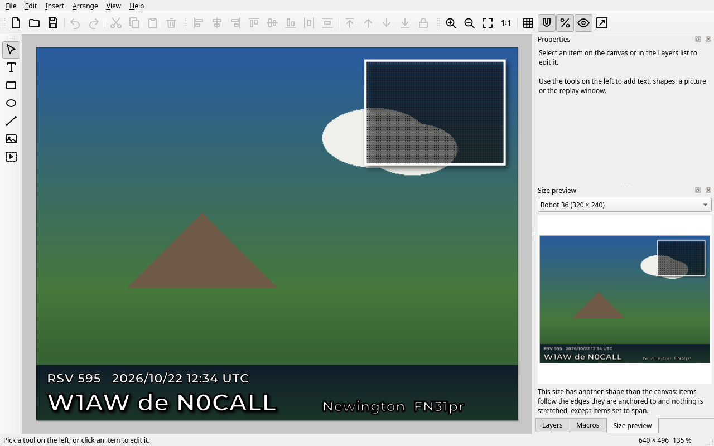
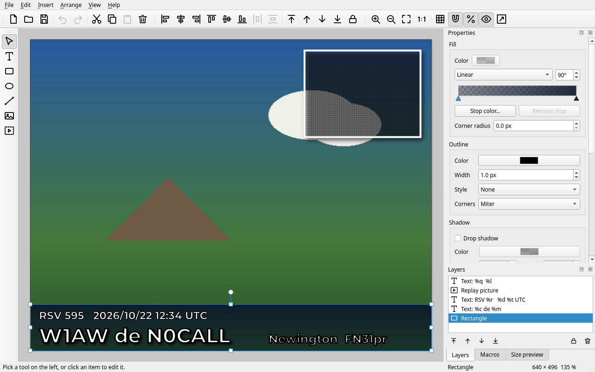

Template editor
A template is laid over every picture you transmit: your call sign, the report, the date and time, a logo, a color bar. You make templates in the template editor, and the Transmit tab and the Gallery use them.

Opening the editor
- Transmit tab: press Edit... next to the template list to edit the selected template. The arrow next to it starts a new template. (Not available while transmitting.)
- Gallery > Templates: right-click a template and choose Edit template..., or right-click anywhere in the tab and choose New template....
Only one editor is open at a time; opening another template while it is open puts the template in the same window (you are asked first if there are unsaved changes). Press F1 in the editor to open this page.
The canvas
The canvas is the picture area of one SSTV mode. Make the template at the size of the mode you send most (for example 640 x 496 for PD120, 320 x 256 for Martin 1). A new template starts with the size of the mode currently selected on the Transmit tab; Arrange > Canvas Size... changes it later, and can scale the items along.
When you send on a mode with another shape (Robot 36 is 4:3, Martin 1 is 5:4) the template has to be fitted to the picture. You choose how under Arrange > Canvas Size..., When the picture has another shape:
- Keep the proportions (the choice for new templates): the template is scaled by one factor to fit, so text and circles keep their shape. The room that is left over is shared out by the anchors of the items: a call sign stays in its corner, a color bar stretches across the full width.
- Stretch the template to the picture: the whole template is stretched, as in older versions. Text looks squashed or stretched when the shape differs.
Templates from earlier versions open as stretched, and the editor shows a blue bar offering Keep proportions: every item is then anchored to the nearest edge or corner, and you can adjust that afterwards.
The gray checkerboard stands for the picture. To see how a template looks on a real picture switch on View > Show Picture Under Template: the picture of the Transmit tab is shown behind the template. It is only a guide and is never saved.

Anchors and the size preview
In a template that keeps its proportions every item has an anchor, set in the Anchor section of the Properties panel (it appears only for such templates). Horizontally an item can be anchored to the left, the center or the right, vertically to the top, the middle or the bottom. When the picture is wider or taller than the canvas the item keeps its (scaled) distance to that edge. Left and right (or Top and bottom) keeps both distances, so the item grows with the picture: use it for a bar across the full width. Scale with picture grows the position and size in proportion, like the old stretch. New items get the anchors their place suggests (a bar dragged along the bottom spans the width and sticks to the bottom), and the anchors follow the item when you move it: a picture that you drag from the middle to the right side ends up anchored to the right. An anchor you have set to something other than what the place suggests stays as it is when you move the item. Text without a box, and turned items, are moved but never stretched.
The Size preview panel (a tab next to Layers and Macros, also under View) shows the template laid over a picture of any mode size, drawn by the same code that puts it on the transmitted picture. Choose a mode in its list to see how the template lands there. For a stretched template it tells you when the picture's shape makes the text look squashed, and offers Keep proportions.

Tools and items
| Tool | Key | What it adds |
|---|---|---|
| Select | V | Nothing: click items to select them, drag to move them, drag empty space to select several. |
| Text | T | A text. Click where it should go, type, then press Ctrl+Enter or click outside. Dragging out a rectangle instead makes a text box. |
| Rectangle | R | A rectangle: drag on the canvas. A plain click adds one of a default size. |
| Ellipse | E | An ellipse or circle. |
| Line | L | A straight line. Its thickness is the outline width in the Properties panel. |
| Picture | Ctrl+I | A picture from a file, for example your club logo. Large pictures are shrunk to 1600 pixels. You can also drop picture files on the canvas, or paste a copied picture. |
| Replay window | P | A window that shows the picture of the small preview on the Transmit tab (right-click it there to load a picture), for example the picture you just received; it changes by itself when a new picture is received, as long as nothing is being transmitted. It is a hatched square in the editor. |
After drawing, the tool goes back to Select. Items are listed in the Layers panel, front item first.
Working with items
- Select
- Click an item, or draw a rectangle around several. Shift- or Ctrl-click adds or removes an item; Ctrl+A selects everything. Items can also be picked in the Layers panel. A locked item is skipped by a click, so it never gets in the way; to select it (and unlock it), right-click it on the canvas or pick it in the Layers panel.
- Move
- Drag an item, or use the arrow keys (1 pixel; with Shift 10 pixels). Dragging snaps to the edges and middle of the canvas and of other items (pink guide lines); hold Alt to switch snapping off for a moment, Shift to move in a straight line.
- Resize
- Drag a square handle. For a picture a corner keeps its proportions (hold Shift to change them), for other items hold Shift to keep them. A corner of a text makes its letters bigger or smaller; the handles of a text box change the box. The edge you drag snaps to the edges and middle of the canvas, of other items and to the grid, like moving does (hold Alt for no snapping).
- Rotate
- Drag the round handle above the item (hold Shift for steps of 15 degrees), or type the angle in the Properties panel, where you also find skew and opacity.
- Several items
- With two or more items selected, a frame with handles appears around them. Drag a handle to resize them together (the arrangement keeps its shape, text gets bigger or smaller with it; Shift keeps the proportions of the frame) or the round handle to turn them together about the middle of the group. Locked items stay as they are.
- Edit a text
- Double-click it, or select it and press Enter or F2. Ctrl+Enter or a click outside is done, Esc cancels. The Properties panel has a text box too.
- Duplicate, copy, paste
- Ctrl+D, Ctrl+C, Ctrl+X and Ctrl+V. Items copy between two editor windows or programs; a picture or text copied elsewhere pastes as a new item.
- Arrange
- The Arrange menu and toolbar: bring in front or send to back, align items to each other (a single item aligns to the canvas), spread three or more evenly, and lock items so they cannot be moved by accident.
- Zoom and pan
- Ctrl + mouse wheel zooms, Ctrl+0 fits the canvas in the window, Ctrl+1 shows it at 100 %. Drag with the middle mouse button, or hold Space and drag, to pan.
- Undo
- Everything can be undone: Ctrl+Z, redo with Ctrl+Shift+Z or Ctrl+Y. A whole drag is one step, and so is a run of typing in one field. Edit > Delete All Items asks first and can be undone too.
Colors, gradients, outlines and fonts
The Properties panel changes every selected item at once. Its sections run from what the item is to where it sits: the text or picture first, then fill, outline, shadow, opacity and lock, the anchor (for templates that keep their proportions), and last position, size and rotation, which you mostly set by dragging on the canvas.

- Fill
- A solid color (with transparency) or a linear, radial or conical gradient for text, rectangles and ellipses. For a linear gradient the direction is the angle: 0° runs from left to right, 90° from bottom to top, 270° from top to bottom.
- Outline
- Color, width and style of the edge, and for text, rectangles and pictures the shape of its outer corners (round, miter or bevel). For a line this is the line; for pictures and the replay window it is the border. White text with a black outline stays readable on any picture. To draw no edge at all, untick the box in the section's title (Outline, Line or Border); ticking it again brings it back as a solid edge. The width is at least 0.5 pixel.
- Font
- Family, size in points, weight, italic, underline and letter spacing. A template remembers the font by name. If a computer does not have the font the text is drawn in another font; the Properties panel then shows a notice, and the template keeps the name.
- Corner radius
- Rounds the corners of a rectangle (in the Fill section).
- Shadow
- Any item can have a drop shadow: it is drawn once more behind the item, shifted right and down by the X and Y values, in the shadow color (a transparent color gives a lighter shadow). Blur softens its edge. The shadow keeps its direction when the item is turned.
Text in a box
Ordinary text is as wide as its letters make it, so a long call sign or place name can run off the picture. Tick Fit in a box in the Text section (or drag out a rectangle with the Text tool) and the text is laid out inside a box you resize with the handles:
- Align and Vertical place the text in the box: left, center or right; top, middle or bottom.
- Wrap lines starts a new line where a word no longer fits the width of the box (a word that is wider than the box is broken between letters).
- Shrink to fit makes the letters smaller, never larger, until everything fits the box. Macros are replaced before this, so
%cfits whether the call isW1AWor9A1ABC/P.
Untick the box for plain text again.
Starting points: starter templates and color bars
File > New asks for the size, the layout and, under Start from, a ready-made arrangement: Blank, a Call sign bar along the bottom, a Call sign in the corner, or a Replay window and call sign bar. Everything in them is an ordinary item you can change. Insert > Color Bar adds a full-width bar with a gradient, at the bottom or the top of the picture, in one of six color styles (dark fade, blue, red, green, gold, rainbow); it goes behind the other items.
For placing things, View > Guides shows dashed lines through the middle of the canvas and frames 5 % and 10 % in from the edges. They are only a help on the canvas and are never part of the picture.
Macros
A text may contain macros that are replaced when the picture is transmitted. The Macros tab next to the Layers panel lists them; double-click one to put it into the selected text (or into a new text). View > Preview Macros shows sample values on the canvas; the template itself keeps the macros.
| Macro | Replaced by |
|---|---|
%c | Call sign of the station you send to (the To box on the Transmit tab) |
%r | The RSV report |
%o | The operator name (the Op box) |
%m | Your call sign (Configuration > Operator) |
%f, %n | Your first and last name |
%q, %l | Your location name and grid locator |
%t, %d | The UTC time (hh:mm) and date (yyyy/MM/dd) |
%v | The QSSTV version |
%x, %y, %z | The three large text boxes on the Transmit tab |
%a, %b | The latitude and longitude from the Lat and Long boxes on the Transmit tab, in decimal degrees (north and east positive, for example 47.60620 and -122.33210) or, with Position format in Configuration > GPS set to degrees and decimal minutes, as 47 36.37N and 122 19.93W; see GPS position |
%g | The city and state from the Place box on the Transmit tab, for example Seattle, WA; the program can look it up from the position, see GPS position |
%s | The signal quality (MER, dB) of the last received DRM picture |
%% | A percent sign |
A macro that does not exist prints nothing; the Properties panel warns about it.
Saving and opening
Templates are saved in your templates folder (Configuration > Directories) as .qtempl files. This is a new, readable text format; it is not
understood by the old QSSTV 9. File > Save and Save As write it, Revert loads the saved file again, and Open Recent
lists the last templates. The title bar shows a * while there are unsaved changes, and closing the editor asks what to do with them.
Templates from earlier versions (.templ) open as well. The editor tells you the template was imported; saving writes a new .qtempl file and never touches the old one.
Once a .qtempl exists the template list shows it instead of the old file with the same name; the old file stays on disk. Damaged or truncated files are refused with a message and cannot crash the program.
A template that cannot be read when a picture is transmitted is skipped and the picture goes out without it (the reason is in the log).
Editing a picture
The template editor is only for templates. To change a picture itself (crop it, adjust it, paint on it), right-click it on the Transmit tab or in the Gallery's TX Stock tab and choose
Edit picture..., or press the pencil on the Transmit tab. QSSTV makes a copy named like holiday-edit.png, opens it in your picture editor and, as soon as you save it there,
uses it as the transmit picture. The original is never changed. Copies are kept in the TX Stock gallery (next to the original when it is there already); a copy you never saved in your editor is removed again when QSSTV closes (or after eight hours).
The picture editor is chosen under Configuration > Gui > Picture editor: type a command, using %f for the file, or press Detect
to pick one of the editors found (GIMP, Krita, KolourPaint, Pinta and others). Left empty, the first one found is used, and failing that the system's default program for pictures.
Keyboard shortcuts
| Keys | Action |
|---|---|
| Ctrl+N / O / S / Shift+S / W | New, open, save, save as, close |
| Ctrl+Z / Ctrl+Shift+Z | Undo, redo |
| Ctrl+C / X / V / D, Delete | Copy, cut, paste, duplicate, delete |
| Ctrl+A, Esc | Select all, clear the selection (or cancel the tool) |
| V T R E L P, Ctrl+I | Select, text, rectangle, ellipse, line and replay tools; add a picture |
| Arrow keys, with Shift | Nudge by 1 or 10 pixels |
| Ctrl+] / [, with Shift | Bring forward / send backward, to front / to back |
| Ctrl+L | Lock or unlock the selection |
| Ctrl+= / - / 0 / 1 | Zoom in, zoom out, fit, 100 % |
| F1 | This page |
Templates are drawn the same way for transmission, the gallery thumbnails and the editor. If you want to try one without a radio, use the command line:
qsstv-experimental --render-template my.qtempl --template-base picture.png (see Decode from file and command line).